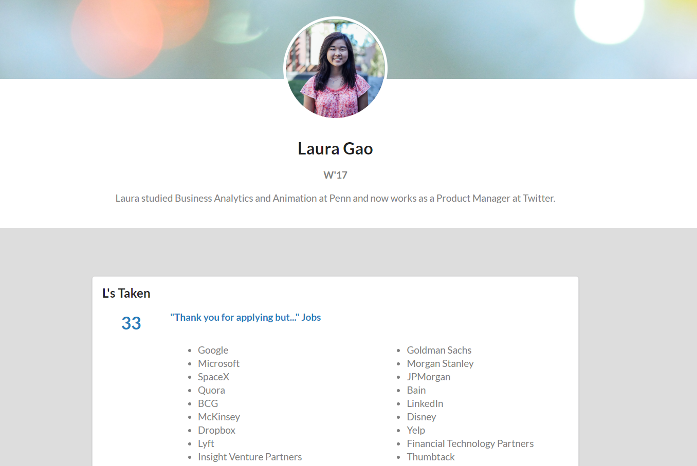
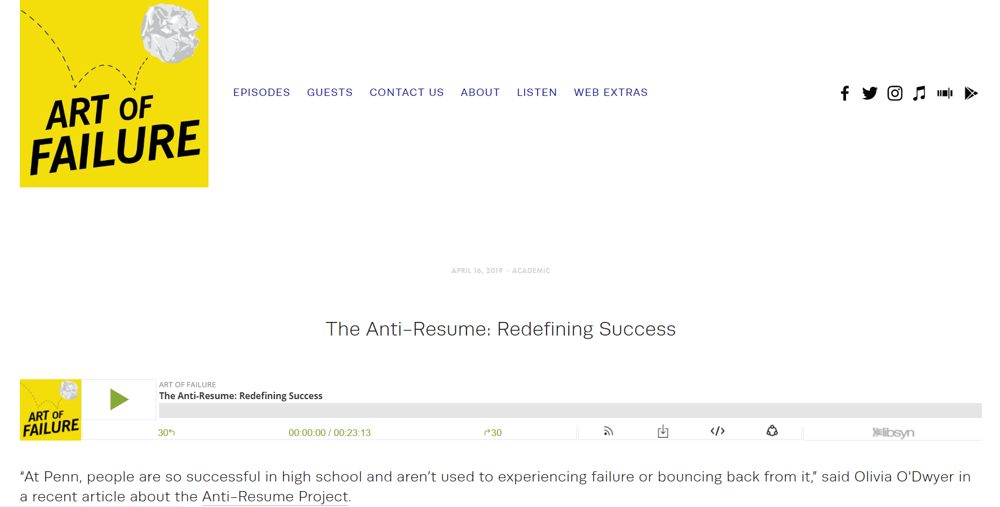

The Anti-Resume Project is a website built to support the campus-wide initiative to destigmatize failure and highlight underrated accomplishments.

The Anti-Resume Project is a website built to support the campus-wide initiative to destigmatize failure and highlight underrated accomplishments.
The Anti-Resume Project was developed by The Signal in fall of 2018 partially as a response to the pressure and stress of the pre-professional culture at Penn. In an effort to break down "Penn Face" (the facade that students put up to mask their underlying struggles) and encourage students that were facing rejection during recruiting season, we asked 20+ outstanding Penn alumni and seniors to submit an "anti-resume": a mock LinkedIn profile full of their failures rather than their successes.

I was a co-lead of the project and helped reach out to seniors & alumni for submissions. I also developed
the website from our club founder's designs.
Figma, Adobe Photoshop, Github Pages (Javascript, HTML/CSS)
The project was a hit. The feedback from the student community was overwhelmingly positive. We were even interviewed about the project on a podcast, which helped bring even more publicity to the initiative and the issues it was targeting.

Seeing the positive response from our peers, we wanted to engage the student community more directly and decided to launch a reflection session called "Failure At Penn" - a 2-hour speaker event in which several prominent graduating Penn seniors spoke openly and honestly about the struggles and obstacles that they learned to overcome over the past 4 years - these included mental & physical health issues, cultural pressures, imposter syndrome, etc. There were over 200+ attendees at the event from all class years and majors. I personally felt deeply impacted by the event because of the authenticity of the speakers and the vulnerabilities that they displayed.